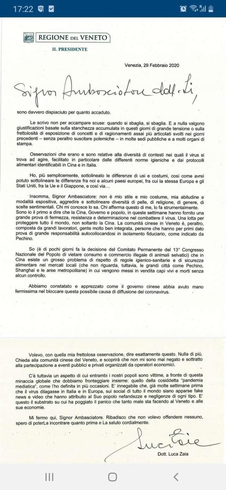
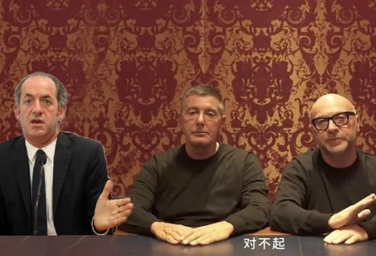
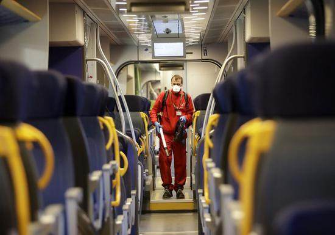

意大利疫情日记①上：防疫准备细致 极右还在瞎闹
原文链接 备份链接 体坛周报全媒体驻意大利记者 王勤伯 意大利新冠疫情突然爆发，不少同事、朋友和读者都对我表达了关心，这里就借体坛加APP的一个角落，和大家聊聊我正在经历的意大利疫情。 （1） 先聊一下对意大利卫生防疫系统和本次应对新冠的 …
体坛周报全媒体驻意大利记者 王勤伯
（一）
之前每一篇日记，都会给大家聊聊意大利的数据。现在我们可以一起看看这个图表，从最近2、3天的数据看，意大利的疫情还算控制得不错。

人数持续增加的地区，全都是围绕疫情爆发点的地区：伦巴第大区、威内托大区、埃米利亚-罗马涅大区。在意大利的东西北沿海地区和中南部，病例增长速度很慢，查出的病例基本都是输入类型，没有再度出现类似科多尼奥小镇一样的疫情爆点。
意大利一南一北两家传染病医院在这次抗疫中扮演着重要角色，两家都直接和该国P4实验室挂钩：米兰的萨科医院，罗马的斯帕兰扎尼医院。
由于北方疫情严重，萨科医院的负责人加利医生这几天是媒体重点采访的人物，他说：
1.政府采取的各种限制措施是必须的，疫情必须继续加以控制，否则将面临严重的医护资源短缺。
2.从临床医学角度看，SARS-CoV-2感染侵蚀人体是一个缓慢的过程，所以存在发病7-10天病情突然加重的现象。有很多重症/死亡患者，其实已经染病较长时间。因此可以认为，病毒在1月下旬即已在意大利传播。
3.科多尼奥镇发生了聚集感染，医院成为传染源，这是一个非常不幸的事件。但幸运之处又在于，疫情爆发一开始就出现这个事故，让别的意大利医院加强了警惕，如果此后能够避免这样的爆点再度发生，会对抗疫提供较大帮助。
4.他领导的团队经过对意大利病人身上分离的病毒和武汉公布的病毒对比，可以认为病毒是去年10月末11月初在中国出现的（意大利罗马另一个重要研究机构根据基因树分析则认为，病毒发生关键变异感染0号病人的日期是11月20-25日左右）。
从目前的疫情看，意大利政府对于防疫本身并没有采取更多的严厉措施，只是通过法令划分疫区、延长关闭学校、禁止大型活动的时间，同时又同意逐步重新开放博物馆等设施。

之前我写过，意大利的防疫偏新加坡模式。这个说法需要稍作纠正。
从感染人数、疫情规模等角度说，意大利情况比新加坡更严重，更多是在寻找一条自己的道路：一边维护公共医疗秩序，把防止大面积聚众感染作为防疫重点，一边尽最大努力维护经济秩序和社会生活，对疫区的企业税务扶持、居民房贷暂停等措施一个接一个推出。
几天前《晚邮报》采访了一位旅居美国的意大利病毒学家，她说美国人也在密切关注意大利防疫，很注意了解意大利的经验。但美国肯定学不来意大利的模式，因为意大利的医疗是全民免费的，而美国完全不一样，“例如发生了枪击案，他们的急救是把枪眼儿帮你堵上，之后你就得自己掏钱了。”
意大利的公立医疗在防疫中到底是如何运转的，之前我在疫情日记里有一些介绍，今天刚好读到一位华侨女士的自述，讲述疫情中自己小孩患病入院的经历，写得非常详细清晰，这里推荐给大家一读。（ 阅读链接）
阅读链接）
（二）
她的文章里谈到了威内托大区主席扎亚的“辱华”言论。真是巧合，在《意大利疫情日记》的第一篇我们就把扎亚给剥了皮，然后扎亚就准时来报道了。
这段“辱华”视频其实是意大利人自己找出来的猛料，一位懂中文的意大利女士为视频配上了字幕。


扎亚在采访中大谈意大利人如何讲卫生，“我们大多数人都看到过中国人吃活老鼠或者类似的东西”，强调只有肮脏的环境才会诞生这样的疾病。
采访在意大利引发了轩然大波，中国大使馆立即表示了抗议。
扎亚表示“抱歉”，写了一封长信给中国驻意大利大使。这封信引发了意大利舆论的再度发酵，因为根本就不是道歉信，而是扎亚向中国大使坚持，自己说的是对的。

用一位意大利网友的评论来说，这封信其实就是一句话：
“我不是种族主义者，但你是中国人。”
上面推荐的那篇文章，作者的意大利老公谈到，意大利政客们的话是老百姓茶余饭后的笑料，确实是这个道理，我看到视频的时候也不是愤怒，是大笑。
为什么这样说呢？大家可以注意到，扎亚一开始说的是“我们威内托人”，然后又赶紧改口为“意大利人”。
因为扎亚说中国人肮脏的话，基本全是他们党成立之初说那不勒斯人和意大利南方人的话。最近几年萨尔维尼领导的联盟党放弃了北方独立的诉求，改成宣扬意大利民族主义，所以赶紧把之前歧视意大利南方人的话换到非洲人、东欧人、亚洲人身上。
这种意识形态的巨变是很难完美实现的，联盟党党徒近年继续侮辱意大利南方人、骂他们脏懒偷的案例比比皆是。扎亚公开信下面的意大利网友留言里，有人立即扒出了他10年前的另一段视频，抨击意大利南方混乱，又抨击意大利人“乱扔垃圾等政府来捡的国民坏习惯”。
意大利网友如何嘲讽这位大区主席呢？（行政区划级别，意大利的大区相当于中国的省），我们一起来看看：
“扎亚大学毕业了吗？”
“他说必须采取有力措施？最有力的措施就是他辞职。”
“翻译太可怜了，这种信怎么翻啊？”
“此人是博西和博尔盖西奥之外联盟党最种族主义的家伙”
“他想说的是：我原本不想说出来，只想这样去想。”
“如图，扎亚加入D&G”

“一个被日坏的天才”
“他差点就成功超越D&G了”
“我要吐了，这信是初一学生水平吧”
“不写这信更好吧，写了更加令人气愤”
“这是喝了四大杯白酒以后的杰作”
“我每次给圣诞老人写信请求怜悯也是这个口吻”
“扎亚说“认识我的人都知道”，这句话是世界波啊”
“这封信的大意是：我不想冒犯中国人民，但你们应该停止吃活老鼠”
“他建议和大使见一面？我认为大使会拒绝他，害怕被他传染啊”
“典型的意大利式虚伪致歉信”
“要做出比那段视频更糟糕的举动非常非常有难度，但扎亚成功啦！”
“起码可以看出信是他亲手写的，要是助手来写，肯定水平会更高一些”
“这是一份白痴的杰作”
“同情一下他吧，意大利语不是他的母语，他先写好威尼斯土话，然后用谷歌翻译的”
“中国驻意大利大使的意大利语比他好10倍”
“星球大战级别的狗屎”
“自己狗屎，还用大区政府的公函纸”
“我8岁孙子的意大利语也可以比他写得更清晰有理”
……
还有很多很多，无法一一整理。
（三）
说回意大利北方人对南方人的歧视，这次意大利北方最富有的伦巴第成为全欧洲疫情重症区和传播来源地，当然免不了成为众矢之的。包括意大利南方的各个大区，也会重点排查近期去过北方伦巴第的人，这导致北方人的优越感受到了重大的挫败。

世界各地的民族主义/排外主义者，语式都是一样的。在米兰南郊的小城帕维亚，一位名叫弗拉斯基尼的市政议员在脸书写，你们这些时不时生活在垃圾堆里的那不勒斯人（和近似者），不用坐浴盆的法国人，把小孩扔进化粪池的罗马尼亚人，有什么资格来嘲讽我们伦巴第人？”
在民众抗议之下，弗拉斯基尼赶紧删除了这段话。
读过上文的人或许都会想问，弗拉斯基尼是不是和萨尔维尼、扎亚等人一样来自“联盟党”？
不是。
弗拉斯基尼过去是北方联盟的铁杆，后来联盟党的核心意识形态从“爱北方”变成“爱国”，不再歧视南方人，改成歧视外国人，弗拉斯基尼认为萨尔维尼背叛了初衷，是个叛徒。
原文链接 备份链接 体坛周报全媒体驻意大利记者 王勤伯 意大利新冠疫情突然爆发，不少同事、朋友和读者都对我表达了关心，这里就借体坛加APP的一个角落，和大家聊聊我正在经历的意大利疫情。 （1） 先聊一下对意大利卫生防疫系统和本次应对新冠的 …
原文链接 备份链接 体坛周报全媒体驻意大利记者 王勤伯 意大利新冠疫情突然爆发，不少同事、朋友和读者都对我表达了关心，这里就借体坛加APP的一个角落，和大家聊聊我正在经历的意大利疫情。 （3） 必须承认，疫情的发生始终有其偶然性，尤其是这 …
原文链接 备份链接 伦巴第大区。图片来源：天空新闻截图 记者：安晶 “ 虽然前三例病例出现在罗马，但疫情并没有在罗马爆发，而是发生在伦巴第大区。 ” 面对新型冠状病毒肺炎疫情的爆发，成为欧洲重灾区的意大利宣布北部11个市镇进入封城隔离，违 …
原文链接 备份链接 截至当地时间24日零时，意大利累计确诊157例新冠病毒肺炎感染病例，2人治愈出院，新增1例死亡病例，累计3例死亡病例。据欧联通讯社报道，死者是一位身患癌症的年长女性，确诊被感染新冠肺炎病毒后不治。 意大利紧急民防部部 …
原文链接 备份链接 意大利的新冠肺炎疫情，在亚洲之外最为严重。 截至2月29日，意大利累计确诊新冠病毒肺炎感染病例1128例，累计死亡29例。该国最早的确诊病例出现在1月30日，是一对来自武汉的夫妻游客。直到2月21日，确诊人数仍仅为3 …